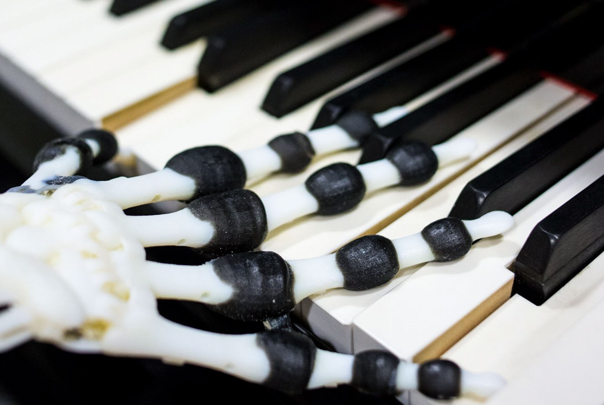
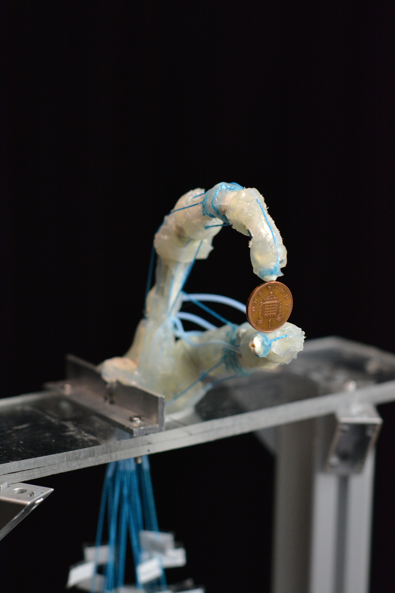
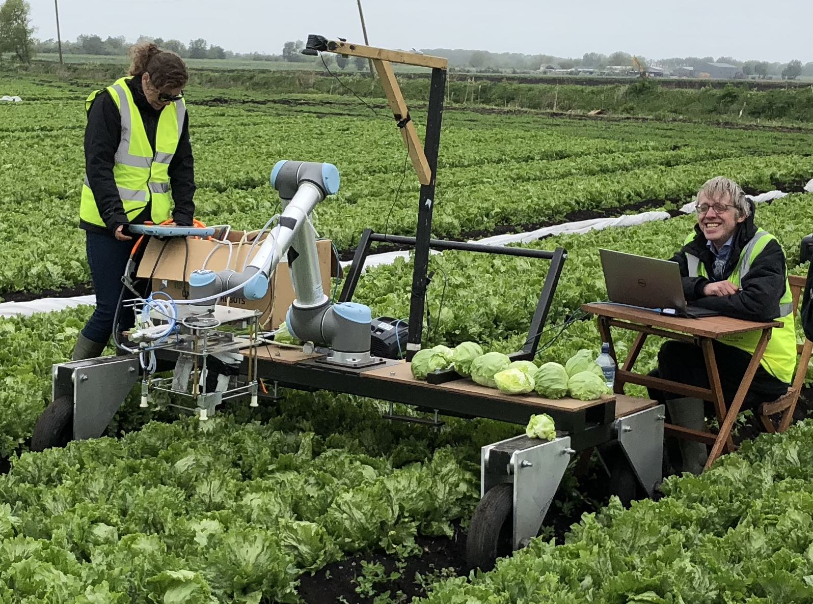

EI’26 International Online Conference on Embodied Intelligence
A global online meeting for the embodied intelligence research community.
Bio-Inspired Robotics Laboratory
BIRL investigates how intelligent behaviour emerges through interactions between bodies, materials and environments. We build bio-inspired robots both as useful machines and as experimental systems for understanding embodied intelligence.
The University of Tokyo × University of Cambridge

News & events
A global online meeting for the embodied intelligence research community.
Nikkei BP publication in Japanese.
Shogakukan publication in Japanese.
BIRL expands its international laboratory community across Tokyo and Cambridge.
Current directions
Three experimental directions within BIRL’s wider study of embodied intelligence.

01
Investigating how compliant morphology and physical dynamics can contribute to sensing, control and adaptive behaviour.

02
Turning soft robotic bodies into large-area sensing surfaces using Electrical Impedance Tomography.

03
Using morphology, touch and physical interaction to manipulate complex and variable objects.
International research community
A global research community exploring intelligence through bodies, materials and physical interaction.
BIRL on YouTube
Robotics makes more sense when it moves.
Research support
Selected programmes supporting research, training and international collaboration.
Current programme
Automation and robotics for sensing, monitoring and proactive maintenance of road infrastructure.
EPSRC Centre for Doctoral Training
Research training across robotics, artificial intelligence and agri-food systems.
2024–2028 · Horizon Europe Guarantee
Training researchers in AI and sensor fusion for sustainable precision-agriculture robotics.